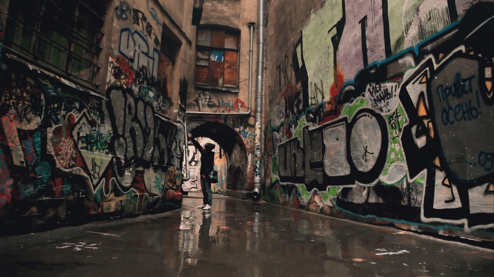

Tema 1: Proceso de enseñanza y aprendizaje del Arte Urbano.
Contextualización del curso y proceso de enseñanza,

El término “Urbano” significa “de la ciudad”, lo cual se deriva de termino latín “urbanus”. El arte urbano se asocia al tipo de arte creado por artistas que viven, definen y expresan la experiencia de “la vida en la ciudad”.
La temática general del arte urbano son sus ciudadanos, los edificios y las situaciones que solo se viven en la ciudad. La forma más común de arte urbano es el Graffitti.
Este curso se ha dividido en 10 temas los cuales puedes observar a continuación:
Contextualización del curso y proceso de enseñanza,
El término “Urbano” significa “de la ciudad”, lo cual se deriva de termino latín “urbanus”. El arte urbano se asocia al tipo de arte creado por artistas que viven, definen y expresan la experiencia de “la vida en la ciudad”.
Aunque el movimiento social del graffiti empezo de manera relativamente reciente, sus origenes pueden encontrase a lo largo de la historia
Para poder estudiar correctamente el tema, es importante hacer una observación a distintos artistas que se han vuelto representativos o importantes para el movimiento. Muchos de estos artistas han dejado su marca en la historia y sus estilos son reconocibles.
El arte gira entorno a la sociedad, por lo cual es dependiendte de su contexto y al mismo tiempo funciona como un medio de expresión del contexto social en que se desarolla
Generalmente las técnicas usadas para el Arte Urbano varían mucho, sin embargo hay algunas que se vuelven un elemento representativo y tienen diferentes connotaciones. A continuación en este apartado se brinda también una breve definición de algunos de los términos y técnicas más relevantes usados en el Arte Urbano.
Para el arte urbano, la tipografía, los símbolos y los iconos representan una herramienta importante como parte de la obra. Esto se debe a que muchos de los estilos usados en el arte urbano, en especial en el Graffiti, hacen un fuerte uso de palabras y elementos reconocibles.
Para el arte urbano, la aplicación de colores se vuelve un elemento importante, ya sea porque puede afectar el resultado visualmente, o puede volverse un elemento central en la obra. Es importante entonces entender cuál es el papel del color en las obras de arte y cuáles pueden ser sus efectos o significados, para ello, hay dos temáticas que son importantes de estudiar.
Identidad de marca es en términos generales los rasgos y características que definen los valores, misión y visión de tu marca como artista. Los diseños más representativos, el estilo grafico usado, las temáticas más importantes a ejecutar, colores y símbolos que forman parte de tu arte hacen parte de una identidad de marca.
Con todos los temas estudiados y con los videos de apoyo vistos hasta el momento, el estudiante debe crear una pieza de arte urbano
Te invitamos a ver el siguiente video con el cual aprenderas un poco de lo que trata el tema.